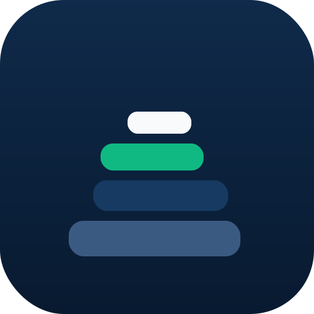
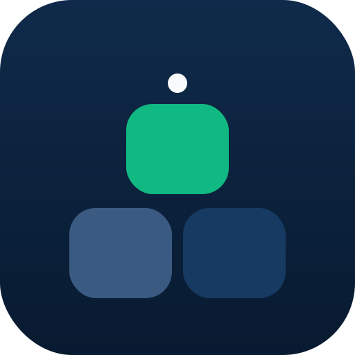

Three directions designed around the cairn metaphor: stacking, ascending, and summit-marking. Same palette as the donut so the brand DNA carries over — just a different silhouette.
The literal cairn — four stones ascending, slightly offset for a hand-balanced feel. Emerald third stone keeps the brand pop; cream peak marker reads as the summit.

Cairn silhouette × bar chart. Reads as upward progress and financial growth at once. Sharpest at favicon size of the three.
Three pebbles in a triangular stack — minimalist, modern, most abstract reading. Less literal than A, but feels the most "design-forward."
